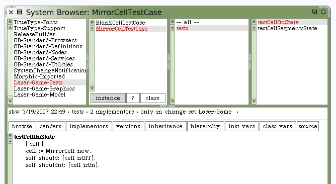
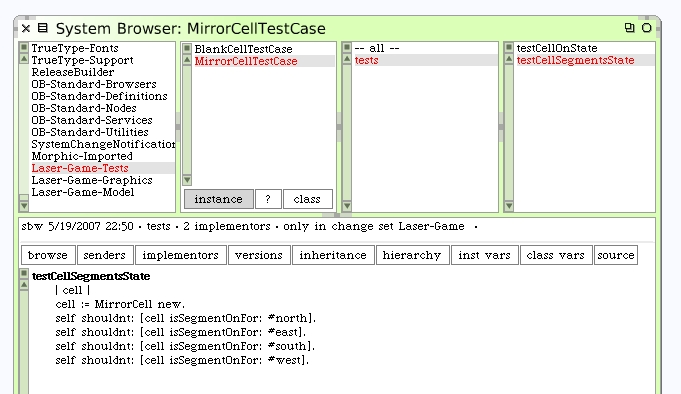
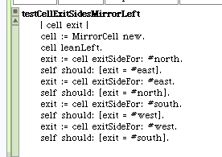
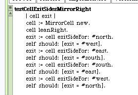
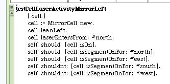
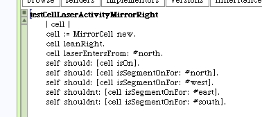

Unit Tests for MirrorCell
With all that inherited code, let's write some unit tests to determine that everything works for our MirrorCell as expected. We can begin by creating the new MirrorCellTestCase as a subclass of TestCase. Next, we copy test case code from BlankCell and modify as required.
 The #testCellExitSides method should be different, and should depend on orientation of the mirror. Use 2 new method names to show testing for each orientation.
 The #testCellLaserActivity method should also be rewritten as 2 methods for the MirrorCell.
 